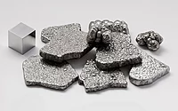

Numero atomico: 26
Massa atomica: 55,85
Temperatura di fusione (°C): 1535
Temperatura di ebolizione (°C): 2861
Energia di prima ionizzazione (kj/mol): 759
Elettronegatività (secondo Pauling): 1,83
Densità: 7,86
Numeri di ossidazione: +2+3
Configurazione elettronica: 1s2, 2s2, 2p6, 3s2, 3p6, 3d6, 4s2
Maggiori Informazioni